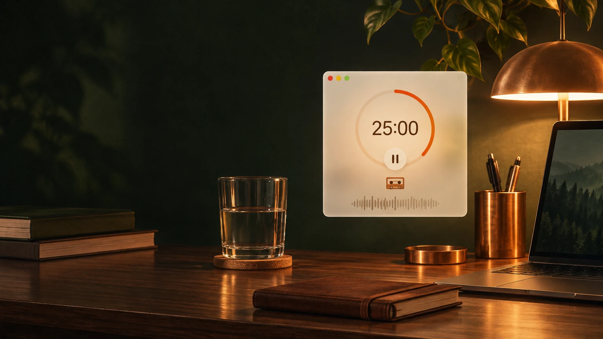

Everything is
asking at once.
One more tab. One more thought. The first job isn’t to finish it all—it’s to find a place to begin.
 retro.
Private beta
retro.
Private beta
✳ FOR THE MOMENT BEFORE YOU BEGIN
A focus timer, a soundtrack, a place to leave your thoughts. Retro makes starting feel smaller—and staying with it feel a little more human.
 R—01A little atmosphere
R—01A little atmosphereNot a bigger system.
Just a softer way in.
Focus rarely starts with a perfect plan. It starts with a small decision, and a little room to make it.
One more tab. One more thought. The first job isn’t to finish it all—it’s to find a place to begin.
Pick a pace that fits the moment. Leave yourself a note. Let the timer hold the edge of the hour.
A pause, a little music, a saved session. Progress can be quiet and still count.

Illustrative page artwork—not a live capture of the Mac app.
Useful when you need them; quiet when you don’t.
Choose a preset or set your own focus and break length. Add an optional goal and session note when it helps.
Four bundled tracks, ready offline. Start a sample below—no playlist hunt, no sound until you press play.
Quick notes, checklists, and session history help you return to the thought you were in.
This small browser demo shows the rhythm—not the app running on your Mac. It doesn’t change your files, settings, or real timer.
RETRO / FOCUS STUDIOCOMPRESSED TIME / BROWSER ONLY
Leave a small breadcrumb for future-you. The note stays in the workspace on this Mac.
Illustrative Notes workspace concept—not an app screenshot.
Pick a sound and let the rest of the room soften. These are the actual bundled track samples—press play when you’re ready.
RETROLo-fi “Cue” by TAD and Jazz “One Step at a Time” by Alex McCulloch are listed as CC0. Piano by maggie.beans3696 is CC BY 4.0. Rainy Cafe mixes rain by Matt Barnard and cafe by Samuel Justice, credited CC BY 3.0. The site includes these track samples with their credits; see the full audio notes.

THE MOMENT BEFORE YOU BEGIN / R—01Retro for Mac is in private beta and isn’t available for public download. This page is a visual introduction—not an installer or a capture of the running app.